Songs
This section describes the use of the various converters built into OpenLP for managing and importing song files from other formats.
Song Importer
If you are using an earlier version of OpenLP or, come from another software package, you may be able to convert your existing database to work in OpenLP. OpenLP can import songs from the following sources:
- OpenLyrics or OpenLP 2 Exported Song
- Generic Documents/Presentations (Requires LibreOffice)
- CCLI SongSelect Files
- DreamBeam Song Files
- EasySlides XML File
- EasyWorship 2009 Song Database
- EasyWorship 2009 Service File
- Foilpresenter Song Files
- LyriX (Exported TXT-files)
- MediaShout Database (Windows only)
- PowerPraise Song Files’
- PowerSong 1.0
- PresentationManager Song Files
- ProPresenter 4 Song Files
- SongBeamer Files
- SongPro (Export File)
- SongShow Plus Song Files
- Songs Of Fellowship Song Files (Requires LibreOffice)
- SundayPlus Song Files
- VideoPsalm Files
- Words Of Worship Song Files
- Worship Assistant (Export CSV)
- WorshipCenter Pro Song Files (Windows only)
- ZionWorx (Converted CSV)
To access the Song Importer click . You will see the Song Importer window, then click Next.
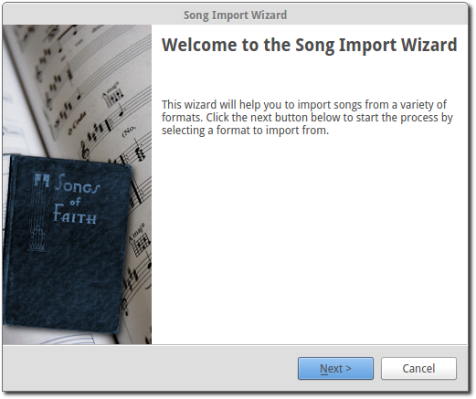After choosing Next you can select from the various types of software that OpenLP will convert songs from.
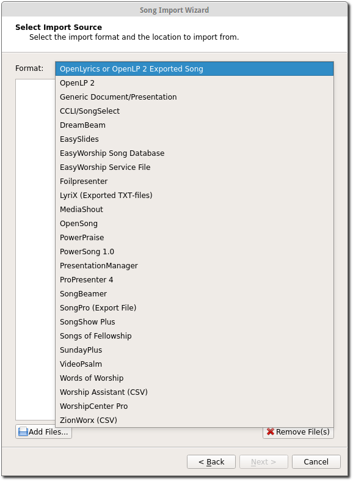Click on the file folder icon to choose the file of the song database you want to import. See the following sections for information on some of the different formats that OpenLP will import. Open
Importing from OpenLyrics or OpenLP 2 Exported Song
OpenLyrics is an open format for song lyrics defined at openlyrics.info, and is the format the OpenLP can export songs to, see Exporting Songs.
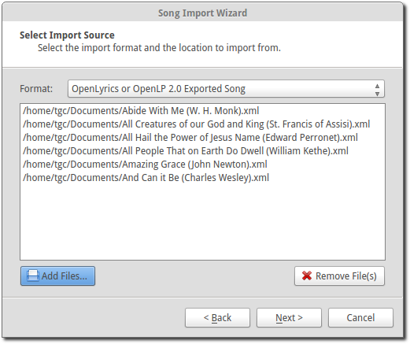To import press Add Files... and select the OpenLyrics files. Then press Next to import the files.
Importing from EasyWorship Song Database
OpenLP can import the song database from EasyWorship 2007 and 2009. To import
songs from EasyWorship’s database you must find and select the file
Songs.DB. You will normally find the file in
C:\Users\Public\Documents\Softouch\EasyWorship\Default\Databases\Data\.
OpenLP will import all the songs it finds in the database.
Importing from OpenSong
Converting from OpenSong, you will need to locate your songs database. In the later versions of OpenSong you are asked to define the location of this. The songs will be located in a folder named Songs. This folder will contain files with all your songs in them, without a file extension (file.xxx). When you have located this folder you will need to select the songs from the folder.
On most operating systems, to select all the songs, first select the first song in the list, press the shift key, and select the last song in the list. After this press Next and you will see that your import has been successful.
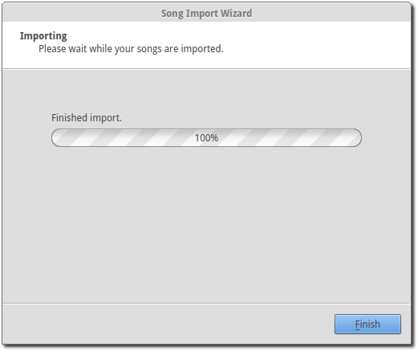Press Finish and OpenLP will be ready to use your songs that you imported from OpenSong.
Importing from CCLI Song Select
To import from CCLI Song Select you must be a CCLI Subscriber and also a subscriber of the Song Select service. For more information go to the CCLI website.
The first step for importing from CCLI Song Select is to log into your account. Once you have logged in search for your desired song. For this example we will be searching for and adding the song “Amazing Grace”.
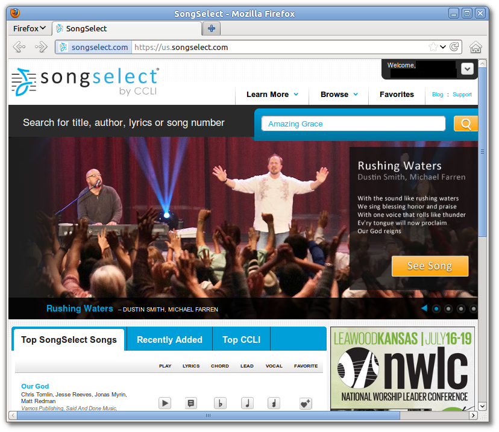You will be presented with the results of your search. Click the LYRICS button and it will take you to the lyrics page displaying the lyrics and copyright information for your song.
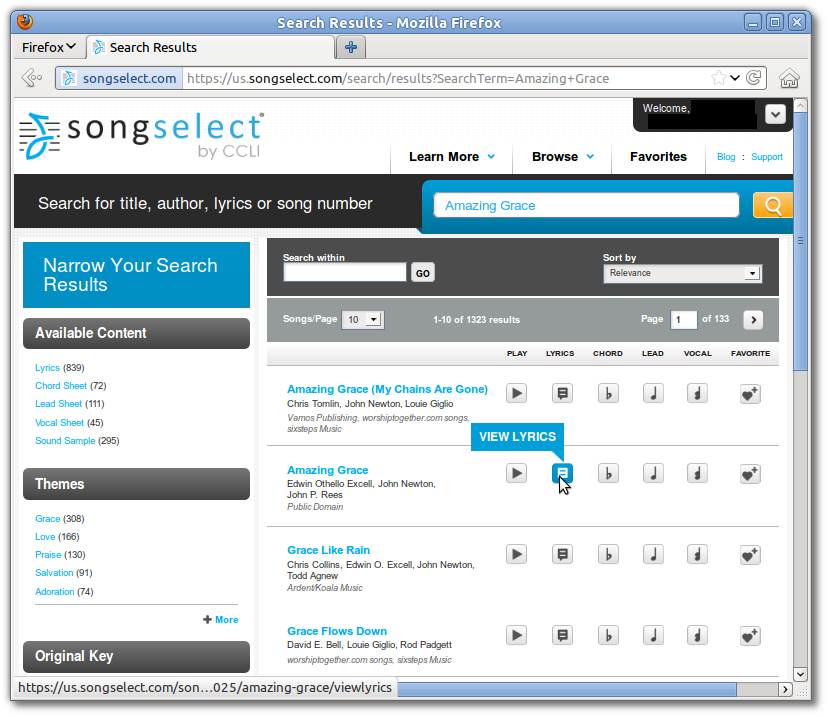Next, hover the mouse over the Download button from the upper right corner and choose either the .txt or .usr file.
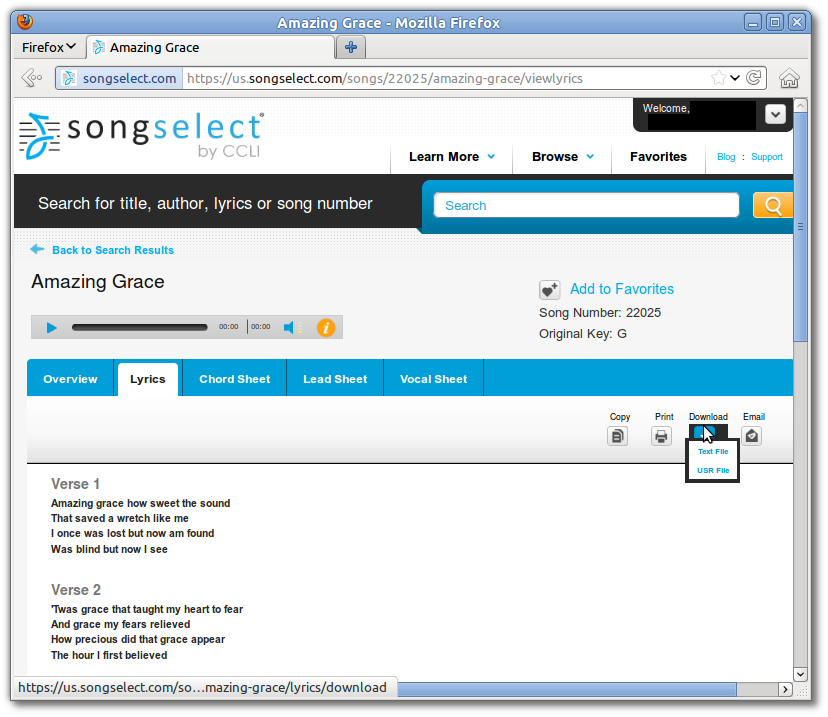You will be asked to choose a download location if your browser does not automatically select one for you. Select the downloaded file from the OpenLP import window and then click Next. When import is finished, you will find your song in the Media Manager.
Note: Most operating systems allow you to select multiple songs for import
by selecting the first item in the list and then holding the Shift and
selecting the last item in the list or holding the Ctrl and selecting the
files individually.
Press Finish and OpenLP will be ready to use your songs imported from CCLI SongSelect.
Importing from ZionWorx
ZionWorx (version 2.5/2.6) stores your songs in a proprietary database format which OpenLP is unable to access directly. You will first need to convert it to a CSV text file, which OpenLP and other tools (such as spreadsheet applications) are able to access. This can be achieved via a free third-party utility called “TurboDB Data Exchange”.
First, locate your ZionWorx songs database. ZionWorx lets you define the
location in . The database folder will
contain a collection of files such as Data.tdbd and
MainTable.dat.
Default location for ZionWorx 2.6 on Windows XP:
C:\Documents and Settings\All Users\ZionWorx\2.6\DataDefault location for ZionWorx 2.6 on Windows Vista or later:
C:\ProgramData\ZionWorx\2.6\Data
Download TurboDB Data Exchange from dataWeb. The utility will be downloaded as an archive file:
Windows:
Open
tdbdataX.zipand copyTdbDataX.exeinto your ZionWorx database folder.Press the keyboard combination
Windows key + Rto open the Run window.Type cmd and click OK.
In the command prompt window that opens, type these commands (replacing
database-folderwith your actual location), followed byEnter:cd "database-folder" tdbdatax MainTable.dat songstable.csv -fsdf -s, -qdLinux:
Right click on
tdbdatax.tar.gzand select Unpack or Extract. Then right click ontdbdatax, select Properties, and make sure the executable option is checked.Alternatively, in the terminal:
tar xvzf tdbdatax.tar.gz chmod u+x tdbdataxCopy
tdbdataxinto your ZionWorx database folder.Finally, open a terminal and cd to your ZionWorx database folder. Type this command and press
Enter:./tdbdatax MainTable.dat songstable.csv -fsdf -s, -qd
You should see some feedback indicating success, such as:
Batch move has moved 408 records.
Your ZionWorx songs database has now been converted to a CSV text file. Run the
Song Importer in OpenLP, select ZionWorx (CSV), and locate the
songstable.csv file you just created.
After clicking Next your import will be complete.
Creating or Editing a Song Slide
When you want to create a new song slide or, once you have a song imported, you want to edit and rearrange the Title & Lyrics, Author, Topics & Song Book, assign a Theme, or edit Copyright Info & Comments, you will do this through the Song Editor.
- Edit:
- To edit an existing song you can either click on a song in the Media Manager and then click the button to Edit the selected song or right click a song from either the Media Manager or additionally from the Service Manager and click Edit item. If you are adding a new song click Add a new Song in the Media Manager.
- Title:
- This is where you would name the song or edit a song name.
Note: Anything typed in the title name between these brackets <> will not be displayed in the screen title. See Clone below.
- Alternate title:
- Alternate Title was for songs with two names “Lord the Light” - “Shine Jesus Shine”. You can also add a name in this box that will bring up the song in Titles search. Example: You could use an alternate title of “hymn” on all your hymn song titles for grouping. When you search “hymn” it will show all the hymns that have “hymn” for the Alternate title.
- Lyrics:
- The Lyrics window shows all lyrics imported or added. On the left side of the lyrics you will see a capital letter followed by a number. A V1 would represent verse 1, C1 would be Chorus 1. You will use these letters and numbers for the order to display the lyrics.
- Verse Order:
- After you entered or edited your song, you will want OpenLP to display the verses in the correct order you want them displayed. On the left side of your lyrics you will see C1, V1, V2 etc. the way they were imported or added. To put your lyrics in the correct order is as simple as typing in the Verse order box at the bottom, the correct order you want them displayed, with only a blank space in between each entry. The correct format will look like this: V1 C1 V2 C1 V3 C1. If you forget to put a space in between the order, or if you do not have the corresponding verse number, OpenLP will politely tell you with a pop-up error message what is wrong so you can correct your mistake and save it. Verse order is optional and if left blank the verses will display in the order seen in Lyrics.
If you forgot to add a verse or intentionally left a verse out of your order you will see the notification at the bottom left of the window saying “Warning: Not all of the verses are in use.”
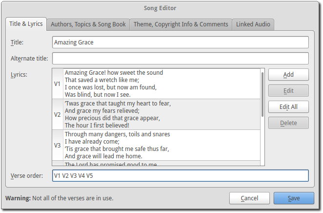If you have not entered a verse order, you will see a notification in the same place saying “Warning: You have not entered a verse order.”
- Clone:
- OpenLP gives you the ability to clone a song. This could be useful if you use a different version of the song with slightly different lyrics. Instead of typing in all the lyrics again, you can clone it which makes an identical copy of the original song.
To Clone a song right-click on the song you would like to duplicate and left- click Clone.
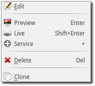After you click Clone you will see the copy of the song with <copy> in the title.
Note: Anything typed in the title name between these brackets <> will not be displayed in the screen title.
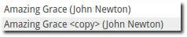Adding or Editing the Lyrics
- Add:
- To Add a new verse, click on Add. The main window is where you will type your lyrics. OpenLP is packaged with a spell checker for most languages. If you misspell a word it will be underlined. Right click the underlined word and left click Spelling Suggestions or you can ignore it and continue typing. You also have the ability to format the font using Formatting Tags. Highlight the word/words you want to format and right click the highlight. Left click Formatting Tags and choose the format you want to apply to the font and the format tags will be entered with your lyrics. These tags are not visible when displayed. To remove the format, delete the tag on each end of the word or sentence.
- Edit:
- To edit an existing verse, click on the verse you wish to Edit then click on Edit, make your changes and click Save.
- Edit All:
- To edit the whole song at once, click on Edit All.
- Delete:
- To delete a verse, click on the verse you want to delete and it will highlight, click on the Delete button and it will be deleted.
Warning: Once you click the Delete button, you will not be asked again, it will be deleted immediately.
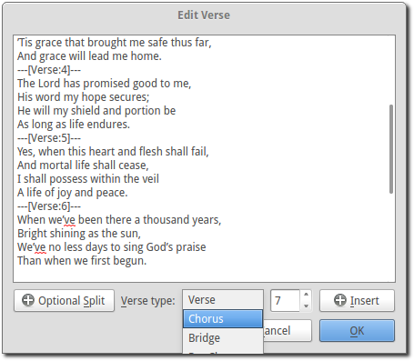- Verse type:
- Select one of seven ways to classify your lyrics. Verse, Chorus, Bridge, Pre-Chorus, Intro, Ending, Other.
- Optional Split:
- Inserts an optional split into the verse. An optional split is used by OpenLP to improve splitting verses when presenting on a screen where there is not room for the entire verse on one screen. If an optional split exists, OpenLP will use it when splitting the verse, otherwise it will simply split the verse when reaching the end of the screen.
If you have more than one verse, you would number them Verse 1, 2, 3 as needed. If you find the verse has too many lines for your screen, you can edit and shorten the verse and Add another slide.
Authors, Topics & Song Book
Once your Title & Lyrics are added or edited the way you want them you must add or enter the author or authors of the song. OpenLP requires all songs to have an author entered. You can add a blank space for the author name.
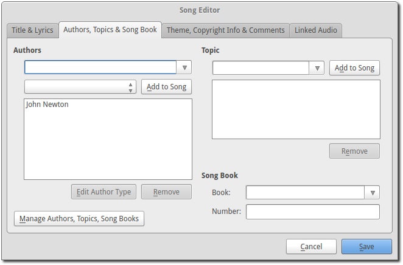- Authors:
- Click the drop down arrow to view all authors or start typing a name in the box and a list will appear. If the authors name has not been added, type the authors name in the box and click Add to Song. The authors name will appear below and will also be added to your database. If you accidentally add the wrong author you can click on the authors name and click Remove.
Manage Authors, Topics, Song Books: Clicking this button will bring up your complete list of authors.
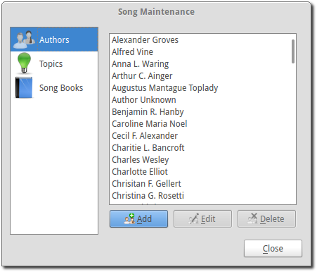- Add:
- Clicking the Add button will bring up a box where you will add the Authors First name, Last name and Display name. Click Save when you are finished.
- Edit:
- The Edit button will bring up window where you can edit the info that is already there.
- Delete:
- The Delete button will remove the author you have highlighted.
Note: You cannot delete an author that is assigned to a song. Authors names are displayed in the footer.
Theme, Copyright Info & Comments
You can assign a Themes to a song, enter the Copyright information and add the CCLI number to the song. If you imported a song from SongSelect this information will usually be entered.
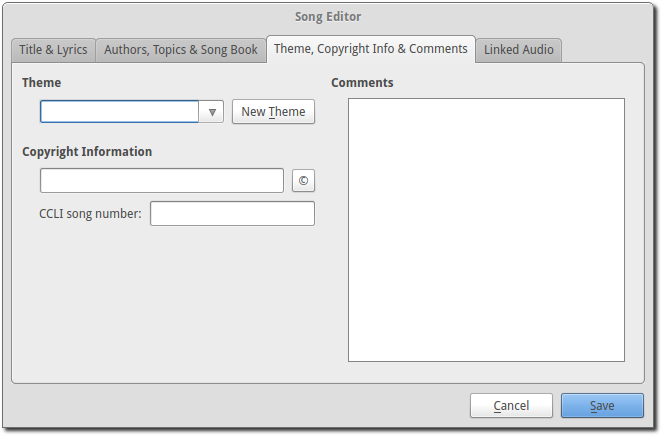- Theme:
- Click the drop down arrow to display your list of themes or start typing a theme name in the box and the list will appear. You can also create a new theme by clicking the New Theme button.
- Copyright information:
- Add or edit the copyright information in this box. If you would like to use the © symbol click © button. This information is displayed in the footer.
- CCLI number:
- Enter the CCLI number in this box.
Note: This is the CCLI number of the song, not your contract number. This number is not displayed in the footer.
- Comments:
- You can add comments in this box. This information is not displayed in the footer.
Linked Audio
OpenLP gives you the ability to play an audio file or multiple audio files when the song is displayed live.
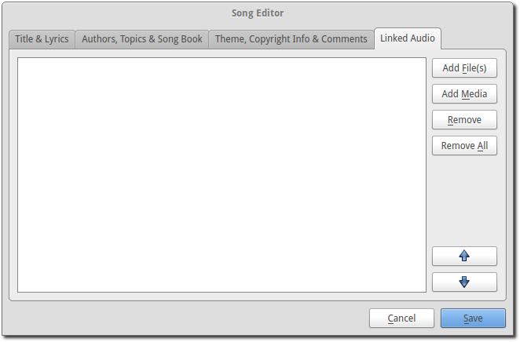- Add File(s):
- Add an audio file from a folder on your computer by clicking Add File(s).
- Add Media:
- Add an audio file that is already in the Media Manager by clicking Add Media.
- Remove:
- Click on a file you want to remove and click Remove.
- Remove All:
- Click on Remove All to remove all audio files linked to the song.
If you added multiple audio files, they will play in the order listed. You can change their position in the order by clicking on an audio file and using the arrows.
 Move selection up one position.
Move selection up one position.
 Move selection down one position.
Move selection down one position.
When you are done, click Save to save your choices. You can click Cancel at anytime if you change your mind.
 This button will appear in the Linked Audio Control when an
audio file is being played with a song. You can stop or start the audio playing
by using this button.
This button will appear in the Linked Audio Control when an
audio file is being played with a song. You can stop or start the audio playing
by using this button.